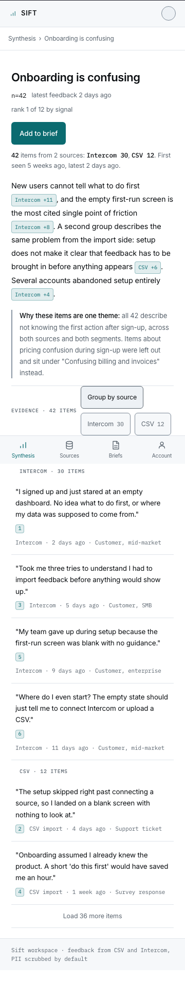
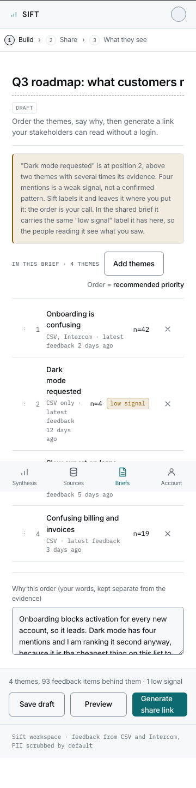

Pixel proof and critique
Every colour screen moved from kit.css to design/system/index.css, and kit.css is deleted. The question this page answers: does the product look the way it did, except where a change was decided out loud? Zero difference is not expected. This stage changed the look on purpose, and every change is a named line in docs/tokens-audit.md. So the proof is that every differing pixel is explained by one of those lines, and that no line claims a change the product does not show.
How it was measured
Before is the product as Step 1 took its census: commit 2aa7baa, served as it was, every screen on kit.css. Step 1 measured computed styles and did not keep frames, so the frames were rendered now from that commit rather than re-taken from today's files, which would have erased exactly what this page compares against. After is the same 22 screens today, on the system. Both in the shipped dark theme, full page, motion off, at 360 and at 1440, then cropped to the product canvas: the stage panel beside the screen is prototype chrome and changed in this step for its own reason, the theme switch.
Two instruments, run on the same pairs. A pixel comparison (any channel more than 8 apart) finds WHERE something differs; a computed-style comparison of every element, matched in DOM order, finds WHAT differs and in which property. The element counts were equal on all 44 pairs. Each difference was then assigned to a line of the three named lists; the table below is the result, and a row with nothing to assign would have been a defect fixed in tokens.css or a component file, never on a screen.
Look at any pair
The count is computed here, in your browser, from the two committed frames in design/kit/screens/proof/.
Every difference, and the line that explains it
| Code | Line in tokens-audit.md | Was | Now |
|---|---|---|---|
| S4 | Foundations review (Step 4): --line-control, dark | #3A444C, 1.76 on a card | #647280, 3.55 on a card. Reaches every field, select, checkbox, and the three non-control rings the system declares as identifying: the done step, the numbered circle on 0.0, the drop zone edge |
| S6a | Step 6: the Step 4 --line-control row, corrected | outlined button and chip at rest on the hairline #262D34 | #647280, the control line |
| S6b | Step 6: .chip.is-on border | #3A444C | --line-hover #868F99, one step above its own off state |
| S6c | Step 6: button, input, select, textarea take font: inherit; letter-spacing: inherit; color: inherit | a button label in Arial on some tags, browser tracking and line height | Inter, the body tracking, inherited line height: widths 1 to 5px apart, the load-more row 0.75px taller, and whatever stands after them moves by that much |
| S6d | Step 6: .toolbar-row on 4.0, 4.1, 6.1, 6.2 | the evidence chips hidden at 820 and below | the chips wrap at every width; at 360 the screen is taller and everything under the toolbar moves down |
| S7 | Applied late at Step 7, under the Step 4 rule: .avatar border | --line-hairline, 1.26 | --line-control, 3.55 |
| S9a | Fixed at the Step 9 critique: .breadcrumb span, the current page | --text-secondary at opacity 0.7: 3.44, under the 4.5 ink floor | --text-secondary, 5.90, with aria-current="page" |
| S9b | Fixed at the Step 9 critique: .step-sep in the phase strip | opacity 0.7, a colour no role holds | --text-secondary |
| S9d | Owner decision at Step 9: "Add themes" on 6.1 and 6.2 | .chip, a filter facet that ran an action | .btn--ghost, same 44px height: primary ink, the button's label and padding |
S9c, the theme card's drill no longer moving on hover, is a line with no frame: the frames are at rest. Every line from S4 to S7 was explained at Step 8; the S9 lines were added to the rows below after the 22 after frames of the 11 touched pages were re-taken.
| Screen | Width | What differs, and the line |
|---|---|---|
| 0.0 Home | 360 | outlined button boundaries S6a; the numbered circles S4 |
| 0.0 Home | 1440 | outlined button boundaries S6a; the numbered circles S4 |
| 2.0 Synthesis | 360 | the avatar ring S7; chip boundaries at rest S6a; control type inherits: tracking, line height, widths, the load-more row 0.75px taller S6c; the chip that is on S6b; checkbox boundaries S4; outlined button boundaries S6a |
| 2.0 Synthesis | 1440 | the avatar ring S7; chip boundaries at rest S6a; control type inherits: tracking, line height, widths, the load-more row 0.75px taller S6c; the chip that is on S6b; checkbox boundaries S4; outlined button boundaries S6a |
| 2.1 Synthesis, first run | 360 | the avatar ring S7; the phase separators S9b |
| 2.1 Synthesis, first run | 1440 | the avatar ring S7; the phase separators S9b |
| 2.2 Synthesis, loading | 360 | the avatar ring S7; the done step ring S4; the phase separators S9b |
| 2.2 Synthesis, loading | 1440 | the avatar ring S7; the done step ring S4; the phase separators S9b |
| 2.3 Synthesis, error | 360 | the avatar ring S7; outlined button boundaries S6a |
| 2.3 Synthesis, error | 1440 | the avatar ring S7; outlined button boundaries S6a |
| 3.0 Sources | 360 | the avatar ring S7; outlined button boundaries S6a |
| 3.0 Sources | 1440 | the avatar ring S7; outlined button boundaries S6a |
| 3.0 Sources, empty | 360 | the avatar ring S7; outlined button boundaries S6a |
| 3.0 Sources, empty | 1440 | the avatar ring S7; outlined button boundaries S6a |
| 3.0 Sources, sync error | 360 | the avatar ring S7; outlined button boundaries S6a |
| 3.0 Sources, sync error | 1440 | the avatar ring S7; outlined button boundaries S6a |
| 3.2 Import a CSV | 360 | the avatar ring S7; the done step ring S4; the drop zone edge S4; outlined button boundaries S6a; control type inherits: tracking, line height, widths, the load-more row 0.75px taller S6c; select boundaries S4; checkbox boundaries S4; the current page in the breadcrumb S9a; the phase separators S9b |
| 3.2 Import a CSV | 1440 | the avatar ring S7; the done step ring S4; the drop zone edge S4; outlined button boundaries S6a; control type inherits: tracking, line height, widths, the load-more row 0.75px taller S6c; select boundaries S4; checkbox boundaries S4; the current page in the breadcrumb S9a; the phase separators S9b |
| 4.0 Theme | 360 | the avatar ring S7; the evidence chips appear at 360 and the content below moves down S6d; chip boundaries at rest S6a; control type inherits: tracking, line height, widths, the load-more row 0.75px taller S6c; the chip that is on S6b; the current page in the breadcrumb S9a |
| 4.0 Theme | 1440 | the avatar ring S7; chip boundaries at rest S6a; control type inherits: tracking, line height, widths, the load-more row 0.75px taller S6c; the chip that is on S6b; the current page in the breadcrumb S9a |
| 4.0 Theme, error | 360 | the avatar ring S7; outlined button boundaries S6a; the current page in the breadcrumb S9a |
| 4.0 Theme, error | 1440 | the avatar ring S7; outlined button boundaries S6a; the current page in the breadcrumb S9a |
| 4.0 Theme, loading | 360 | the avatar ring S7; the current page in the breadcrumb S9a |
| 4.0 Theme, loading | 1440 | the avatar ring S7; the current page in the breadcrumb S9a |
| 4.1 Theme, low signal | 360 | the avatar ring S7; the evidence chips appear at 360 and the content below moves down S6d; chip boundaries at rest S6a; control type inherits: tracking, line height, widths, the load-more row 0.75px taller S6c; the chip that is on S6b; the current page in the breadcrumb S9a |
| 4.1 Theme, low signal | 1440 | the avatar ring S7; chip boundaries at rest S6a; control type inherits: tracking, line height, widths, the load-more row 0.75px taller S6c; the chip that is on S6b; the current page in the breadcrumb S9a |
| 6.0 Briefs | 360 | the avatar ring S7; outlined button boundaries S6a |
| 6.0 Briefs | 1440 | the avatar ring S7; outlined button boundaries S6a |
| 6.0 Briefs, empty | 360 | the avatar ring S7 |
| 6.0 Briefs, empty | 1440 | the avatar ring S7 |
| 6.1 Build brief | 360 | the avatar ring S7; field boundaries S4; control type inherits: tracking, line height, widths, the load-more row 0.75px taller S6c; the evidence chips appear at 360 and the content below moves down S6d; chip boundaries at rest S6a; outlined button boundaries S6a; the phase separators S9b; "Add themes" as a ghost button S9d |
| 6.1 Build brief | 1440 | the avatar ring S7; field boundaries S4; control type inherits: tracking, line height, widths, the load-more row 0.75px taller S6c; chip boundaries at rest S6a; outlined button boundaries S6a; the phase separators S9b; "Add themes" as a ghost button S9d |
| 6.2 Build brief, thin-theme warning | 360 | the avatar ring S7; field boundaries S4; control type inherits: tracking, line height, widths, the load-more row 0.75px taller S6c; the evidence chips appear at 360 and the content below moves down S6d; chip boundaries at rest S6a; outlined button boundaries S6a; the phase separators S9b; "Add themes" as a ghost button S9d |
| 6.2 Build brief, thin-theme warning | 1440 | the avatar ring S7; field boundaries S4; control type inherits: tracking, line height, widths, the load-more row 0.75px taller S6c; chip boundaries at rest S6a; outlined button boundaries S6a; the phase separators S9b; "Add themes" as a ghost button S9d |
| 6.3 Share link | 360 | the avatar ring S7; field boundaries S4; control type inherits: tracking, line height, widths, the load-more row 0.75px taller S6c; outlined button boundaries S6a; the phase separators S9b |
| 6.3 Share link | 1440 | the avatar ring S7; field boundaries S4; control type inherits: tracking, line height, widths, the load-more row 0.75px taller S6c; outlined button boundaries S6a; the phase separators S9b |
| 6.3 Share link, loading | 360 | the avatar ring S7; the phase separators S9b |
| 6.3 Share link, loading | 1440 | the avatar ring S7; the phase separators S9b |
| 6.4 Shared brief | 360 | none |
| 6.4 Shared brief | 1440 | none |
| 7.0 Account | 360 | the avatar ring S7 |
| 7.0 Account | 1440 | the avatar ring S7 |
| 7.2 Data and privacy | 360 | the avatar ring S7; control type inherits: tracking, line height, widths, the load-more row 0.75px taller S6c; outlined button boundaries S6a |
| 7.2 Data and privacy | 1440 | the avatar ring S7; control type inherits: tracking, line height, widths, the load-more row 0.75px taller S6c; outlined button boundaries S6a |
The reverse check: lines with no visible difference
A named change that the product does not show is either a change that never arrived or a list that lies. Every line of the three lists was held against the 44 pairs.
| Line | Seen on the sample? | Why |
|---|---|---|
Step 4: --text-danger (dark) #E5484D to #EB6266 | no | No screen of the sample carries small red ink at rest. The change is real: it shows on the frozen Stage 07 kit, on the field error line, measured by the same computed-style comparison |
Step 4: --line-control (light) | no, by construction | The proof runs in the shipped theme, dark. The light value was measured in the theme pass below (3.30 on a card) |
Step 3: .btn--ghost, .chip, .check take font-family: inherit | yes, inside S6c | Step 6 finished the same rule on every control; the two lines describe one change |
Step 3: radius of .check and .skel through its variable | none expected, none found | the value is identical |
Step 3: --red-edge on .notice--error | none expected, none found | withdrawn at Step 6: both bands are solid again, as kit.css drew them |
| Step 6: nine "moved with no change of appearance" lines and twelve "reverted to kit.css" lines | none expected, none found | the values are byte for byte the kit.css ones |
Step 6: --line-strong, --line-warning-strong, solid --line-danger | none expected, none found | new roles carrying the value kit.css drew |
Step 6: .citechip:hover | none expected, none found | a hover state; the frames are at rest |
Outside the product frame
| What | Result |
|---|---|
| The stage panel beside every screen | One difference: the theme switch, a new button beside "All screens". Everything else in the panel is identical |
| The canvas behind the screen | It read --canvas, a kit.css name, and now reads --bg-page: the same pixel in dark, and the light theme now reaches it |
| The design hub, design/overview.html | Chrome, not a screen. Two differences, both from base.css: a link in its prose, unstyled before and browser blue, now takes the colour of its sentence; the coverage legend sits up to a pixel to the side. The legend and the tile hover now read the accent primitive instead of the kit.css name |
| The frozen shell stand | On the system, and identical except the avatar ring (S7). In the viewer above |
| The frozen Stage 07 kit | On the system. Its own chrome, swatches and inline exhibits read the Stage 07 variable names, which now live in its own style block, copied byte for byte from the last kit.css. Every component difference inside it is one of the six lines above, plus S4 --text-danger on the field error. Its frames are 14,000 to 22,000px tall and are not committed; the computed comparison is in docs/decisions.md |
The product in the light theme, for the first time
The switch is in the panel of every colour screen, beside "All screens". The stored choice is applied in the head of each screen before the first paint, so a light reader never sees a dark flash: with the light theme chosen and the panel script held back for 1.5 seconds, the screen was already light. The product keeps its own key, apart from the stand's.
The walk: all 22 screens at 1440 and 360 in both themes, every element measured, as at Step 7 on the showcase. It reported no text under its floor (the lowest in light the low-signal badge at 5.00), and that was wrong: it never multiplied an element's opacity, and the breadcrumb's current page sat at 3.44 / 3.13 (S9a, found at Step 9). Otherwise: no two surfaces that part in one theme and merge in the other, no control edge under 3:1, equal element counts, no horizontal scroll, no console error. Nothing had to be pulled apart in the pair, so no line goes to the Step 9 summary from here.





kit.css is deleted
One source of style, not two. No file in the repository loads it any more: no link, no import, no url, checked by search and again by Codex. It is still named in many places as the origin of a value, which is history and stays. Statements that said a rule still lives in it were corrected where they were found, and the rule in CLAUDE.md now names design/system/index.css as the one stylesheet a screen may use. Git keeps the file: git show 1cd80a7:design/kit/kit.css.
Critique by class, Step 9
Five sets, collected apart and merged into one table: Codex reading the source read-only, a clean-context reader placing three components on a new screen from the pages alone, Claude's four classes, /impeccable audit on the rendered screens, and a dry run over the still-grey screens. Then a second Codex pass on the 39 files the fixes touched. The full log, row by row with the file and line: docs/critique.md.
| Class | Found | Who found it | Fixed | Withdrawn | Deferred |
|---|---|---|---|---|---|
| Contrast, ink, with the opacity multiplied | 1 | impeccable | 1 | 0 | 0 |
| Value past the tokens; state that moves the element | 2 | Claude; Codex and reader | 2 | 0 | 0 |
| Token comment, primitive with no consumer | 4 | Claude; Codex, second pass | 4 | 0 | 0 |
| Old path | 4 | Codex, both passes; Claude | 3 | 1 (dated history) | 0 |
| Markup off the page, page against code, node numbers | 5 | reader; Claude | 5 | 0 | 0 |
| Misread, from the reader | 1 | reader | 1 | 0 | 0 |
| Could not understand, from the reader | 10 | reader | 7, one by an owner rule | 0 | 2 |
| Usage data, list without idle control | 3 | Claude and reader; dry run; Codex | 3 | 0 | 0 |
| Snapshots proving sameness; page format | 2 | Claude | 2 | 0 | 0 |
| Off-ramp literals, geometry as a literal | 3 | impeccable; Codex, second pass | 1, in DESIGN.md | 2 (declared on the pages) | 0 |
| Surface of a role; disabled contrast | 5 | Codex, second pass | 0 | 5 (one fill drawn by a border; WCAG exempts inactive controls) | 0 |
| Detector rules on brand decisions | 2 | impeccable | 0 | 2 (the identifying band rule, the brand face) | 0 |
| Readability floor, line measure, stragglers | 3 | impeccable | 0 | 0 | 3, Stage 10 |
| Dry run holes; outside the stage | 15 | dry run | 0 | 0 | 15, Stages 09, 10, 12, the owner |
What the "who found it" column says. Every class that lives in a file was found by Codex or by Claude reading it, and the second Codex pass found two that both first passes missed (an orphan leading step, eight stale head comments). The one real accessibility failure was found by neither: the current page in the breadcrumb sat at 3.44 and 3.13 because of an opacity: 0.7, and every walk of Steps 7 and 8 read the colour without multiplying the opacity. A rendered detector caught it. The walk now multiplies the opacity of the element and every ancestor: 20 failures on the commit before the fix, 0 of 3,198 text nodes after. The reader found what no checker can: 10 rules the pages never wrote down.
The stage in numbers, before and after
| Token audit | Before the split (Step 1) | Now |
|---|---|---|
| Variables in the product token file | 30, of them 7 prototype chrome | 81 primitives, 36 of them colour; 29 semantic declarations (22 colour roles, 4 state, 1 depth, 2 component); 0 chrome, moved to design/_panel.css |
| Roles with a light pair | no theme existed | 29 of 29 |
| Variables with an origin | 23 of 23 product variables | every role carries its origin and a usage count in its comment |
| One variable carrying several roles | 3 (--canvas, --surface, --cyan) | 0: split into roles by surface |
| Drift consolidated | 3 lines decided at Step 2 | 2 applied, 1 withdrawn at Step 6 (--red-edge) |
| Values past the variables | 3 radii, 0 colours | 0; the declared literals are listed in DESIGN.md |
| Primitives with no consumer, removed | n/a | 3 at Step 9: --red-a32, --red-a35, --leading-snug |
| Consolidation | Stage 07 | Stage 08 |
|---|---|---|
| Rows describing the product | 248 class rows, one per occurrence | 63 at Step 2 (51 components, 12 one-offs); 50 components after Step 6 folded textarea, select and the low-signal badge into variants and promoted the provenance list |
| Classes moved by the rename map | n/a | 22 rows, executed on the colour screens at Step 6; the grey waits for Stage 12 |
| Deleted as dead | n/a | .page, .nav-links at Step 3; the classes worn by no painted screen were kept on purpose, they are the auth and legal screens |
| Control census, two measurements | Step 1, on kit.css | Step 6, on the system |
|---|---|---|
| Visible controls, 22 screens at 360 and 1440 | 478 | 478 |
| Control families | not recorded | 23 |
| Rows that are a defect rather than a declared axis | 1 (a button in Arial) | 0 |
| Classes worn on a screen and declared nowhere | n/a | 31 found, 0 left |
| "Control without a form" rows open | 16, all closed at Step 2 | 0; the dry run's 11 new holes are the Stage 12 list |
The census says the opposite of the pixel proof: the proof says nothing changed by accident, the census says the set of forms was closed on purpose. Sources: docs/tokens-audit.md, docs/inventory.md, docs/census.md.
The theme, by three instruments
| Instrument | Found | What it was |
|---|---|---|
| The stress test on the showcase, Step 7 | 1 fixed, 2 rules | The avatar's edge read the hairline, 1.26 and 1.20, and now reads the control line. A warning or error band never on a raised surface, where its ink falls under 4.5 |
| The second walk on the moved screens, Step 8 | 0 | Nothing to pull apart in the pair |
| Escapes of Step 5, a component reading a colour primitive | 0 | Codex, both passes of Step 9 |
| Added at Step 9: the walk itself | 1 | Not a theme pair but an instrument gap: both walks above read colour without opacity and passed the breadcrumb at 3.44 / 3.13 (S9a). That is a finding about the PROCESS: a check that cannot see a property will pass whatever that property breaks |
The dry run over the still-grey screens
The rollout moved to Stage 12, and with it the main test of whether the system is complete. In its place, on paper: the densest grey-only screens, held against the inventory, the system and microcopy.md. 4 screen families on 6 pages (7.1 Plan and limits, 1.0 Auth in three states, 9.x Legal, 7.3 Profile), of 15 grey-only pages. 20 holes: 7 were already backlog rows, 13 are new; 2 were fixed in this step (the auth card page, the 7.x screens in the inventory) and 11 went to docs/backlog.md, nearly all for Stage 12. 7.3 Profile has none. 7.1 cannot be painted from the system today: its plan summary, its limits list and its meter have no form.
The stage contract
A third instrument, apart from the defect table: every line of the stage's input and output, its gates and its "done when", answered done, not done or skipped on purpose, with where. 33 rows: 29 done, 3 done with a deviation decided earlier in the stage (the panel groups by purpose, the card format of the component pages, the inventory as the "All components" page), and 1 not done until this step: this page sat under "Overview" instead of its own "Verification" group. The table is in docs/critique.md.
Stage 09: the patterns, and the system's own critique
Stage 09 made no new look. It took two compositions that stood on three grey screens each, moved the colour pages that carry them onto two pattern files, and proved that nothing moved. Then it let the system be read by people who had not built it. The sections below are its proof, kept on the page where the Stage 08 proof already stands.
Before and after, the pages moved onto patterns
11 colour pages moved onto the grouped list (8) and the filtered list (6), three of them onto both. 22 pairs, 44 frames of the product frame at 360 and 1440, fonts cached so that two identical runs give 0 px. Every pair was 0 px at Step 1, and at Step 6 the same pages, shot again after Steps 2 to 6, are still 0 px against the Step 1 frames. None is left unchecked. No pattern waits with three grey screens and none in colour: both have colour pages.
| Page | Pattern | 360 | 1440 | Step 1 | Step 6, again |
|---|---|---|---|---|---|
| 2.0 Synthesis | Filtered list | before · after | before · after | 0 px | 0 px |
| 4.0 Theme detail | Grouped list, Filtered list | before · after | before · after | 0 px | 0 px |
| 4.0 Theme detail, loading | Grouped list, Filtered list | before · after | before · after | 0 px | 0 px |
| 4.1 Theme detail, low signal | Grouped list, Filtered list | before · after | before · after | 0 px | 0 px |
| 3.0 Sources | Grouped list | before · after | before · after | 0 px | 0 px |
| 3.4 Sources, none connected | Grouped list | before · after | before · after | 0 px | 0 px |
| 3.5 Source: sync error | Grouped list | before · after | before · after | 0 px | 0 px |
| 6.0 Briefs | Grouped list | before · after | before · after | 0 px | 0 px |
| 6.0 Briefs, empty | Grouped list | before · after | before · after | 0 px | 0 px |
| 6.1 Build brief | Filtered list | before · after | before · after | 0 px | 0 px |
| 6.2 Brief: thin-theme warning | Filtered list | before · after | before · after | 0 px | 0 px |


Frames: design/kit/screens/patterns/. The four share-link-r1 frames there are not a pattern move: they are the 6.3 button fix of Step 1, which changed the button and nothing else on the page.
Critique by class, Stage 09 Step 6
Four sets, collected apart and merged after all four were in: Codex reading the source read-only, a reader with a clean context building 3.6 Source: manage from the system's pages alone, Claude's three browser classes, and /impeccable audit on what the stage added. Every row was checked in the current file before anything was fixed; a second Codex pass over the 23 changed files found nothing.
| Class | Found | Who found it | Fixed | Withdrawn on verification | Deferred |
|---|---|---|---|---|---|
| Could not understand, understood wrongly | 6 | reader | 6: a sixth kind of contribution, a block on one screen in one-off.css, written in all five places of the rule; the backlog in one place with IDs; two [?] linked to their rows; the breadcrumb's slot in the shell; when to take each screen head; the scope line's "when" | 0 | 0 |
| Documentation lies | 3 | reader (1), Codex (2) | 2: the inventory and three pages said the grey 3.6 carries a status tag, a source row and a dialog, and it carries none; the inventory's totals said 50 | 1: a dated Stage 08 log line, true when written | 0 |
| Declared list with no idle check | 1 | reader | 1: 32 backlog rows had no level and no priority | 0 | 0 |
| A gap in the system | 2 | reader | 0 | 0 | 2: S6-1, a note under a section heading; S6-2, a destructive action that is itself the confirm. Stage 12 |
| State as a value | 1 | Codex | 1: the focus ring's three numbers became --ring-width, --ring-offset, --ring-offset-wide, values unchanged | 0 | 0 |
| Token without a page | 1 | Codex | 0 | 1: --opacity-disabled is not a colour and is shown on the button and architecture pages | 0 |
| Contrast in the prototype chrome and the roadmap | 4 | impeccable (1), impeccable and Claude (1), Claude on the re-check (2) | 4: the panel's grey from 3.49 to 6.74, a screen still grey from 1.9 to 4.92; the hub kept dark in both themes; the hub's flow id from 4.48 to 4.96; the roadmap sidebar from 3.49 to 5.78, its current stage to 4.86 and its SOON entries to 4.92, on the owner's go | 0 | 0 |
| Line measure, the 10px step | 2 | impeccable | 0 | 0 | 2: the raw item's quote on 5.0 joins B-25; the stand's 10px labels are B-24. Stage 10 |
| A decision owned elsewhere | 4 | impeccable (2), reader (2) | 0 | 4: the brand face; the 28px avatar and inline links; the states of 3.6 live in IA; "Cancel" lives in microcopy | 0 |
| Desync, a screen against its page | 4 of 157 forms | Claude | 0 | 4: the first instance only; visually hidden; two inherit the prose size | 0 |
| A state that moves the layout | 0 of 1016 controls, and the home | Claude | checked, empty | ||
| Anatomy labels without a class | 0 of 53 pages | Claude | checked, empty: six rows name the text node, which has no class | ||
| State without a pair, and 15 more file classes | 0 | Codex, both passes | checked, empty: 29 tokens against 29, the focus ring 5.52 to 9.13 | ||
What the "who found it" column says. 28 found: 14 fixed, 10 withdrawn with a reason, 4 deferred with an address. The reader found the two P1 rows, and neither is the kind a source reader or a detector finds: the contribution rule had no address for a block that stands on one screen, and the inventory described a grey screen that draws none of what it said. Codex read the files clean twice and caught the literals in a state selector. The reader had 12 open questions, so the run was not a formality; 25 of its 27 decisions were the intended ones, and both that were not came from the missing address.
Holes in the theme pair
Inside the system, none. Codex compared every role and state token of :root with [data-theme="light"] in both passes, 29 against 29, and the focus ring holds 5.52 to 9.13 in both themes. The pair has been written from the first line since Stage 08, and the last hole it had, the avatar edge under 3:1, was closed at Stage 08 Step 7. One hole outside it: the hub of the product, chrome on --pf-*, took a stored light choice from the screens and drew dark chrome text on a light page, 1.22:1 on its section titles. The theme switch now applies only where the screen panel is, and the chrome stays dark in both themes.
Stage 09 in numbers
| What | Count |
|---|---|
| Components, with states in both themes | 30 of 51 |
| Components that are not interactive, and so have no states | 21 of 51 |
| Components the stage added, through its own contribution rule | 1, the raw item |
| Patterns, each on three grey screens | 2, on 11 colour pages |
| Candidates waiting for a third screen | 4, on patterns.html |
| Usage rules, each with its source | 9, R1 to R9; two widened by the first screen built from the system |
| Rows in the backlog | 40: 32 carried over, 6 from Step 5 (3 closed by the owner), 2 from Step 6. 37 open |
| Product screens in colour | 24, two more than at the close of Stage 08: 5.0 and its state 5.1 |
The stage's contract, every line of its inputs, gates and "done when" answered apart from this table: design/kit/docs/critique.md, "Stage 09".